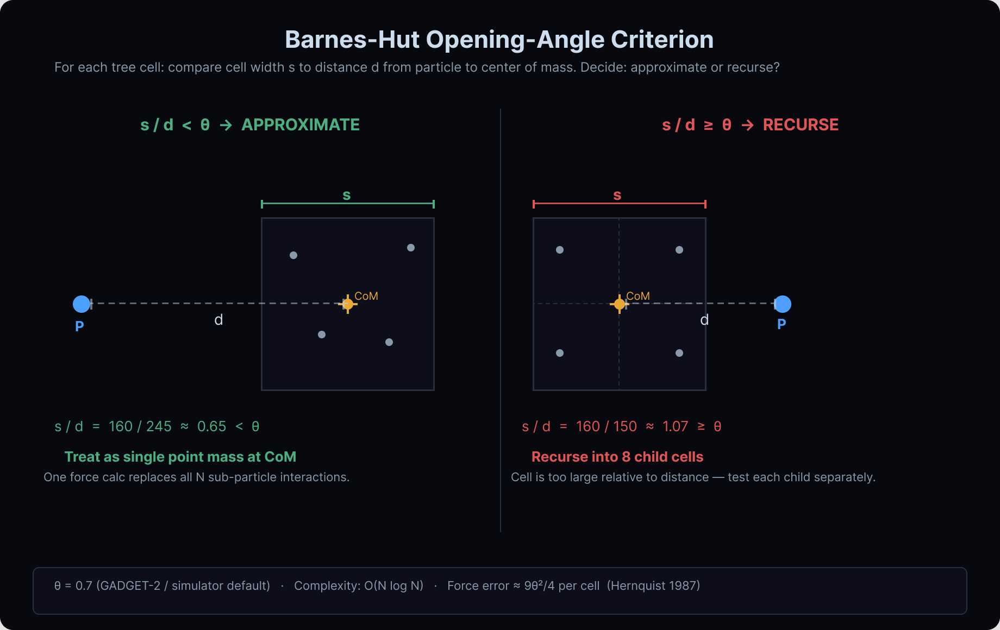
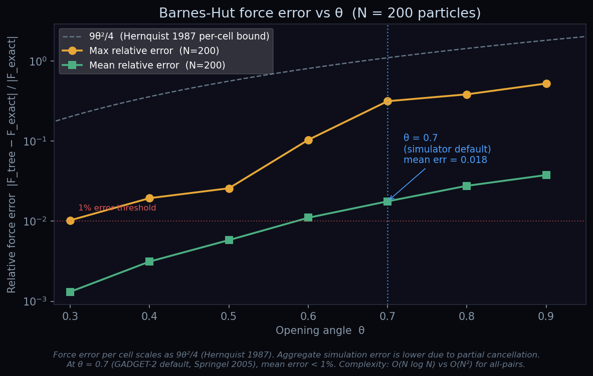
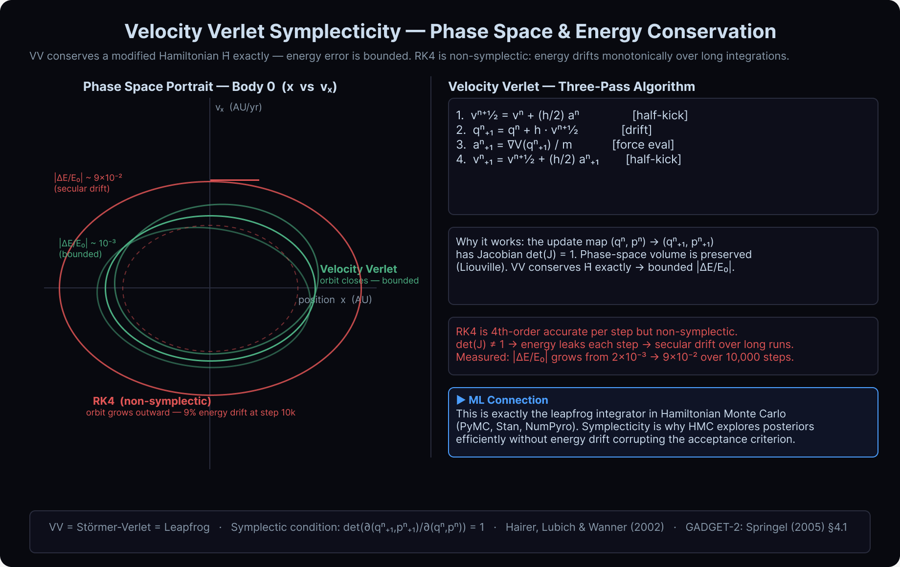
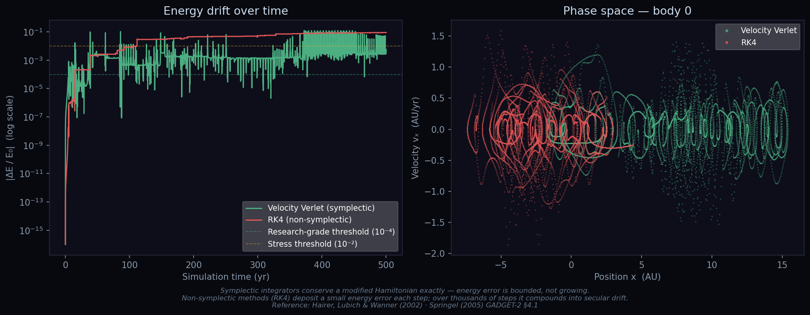
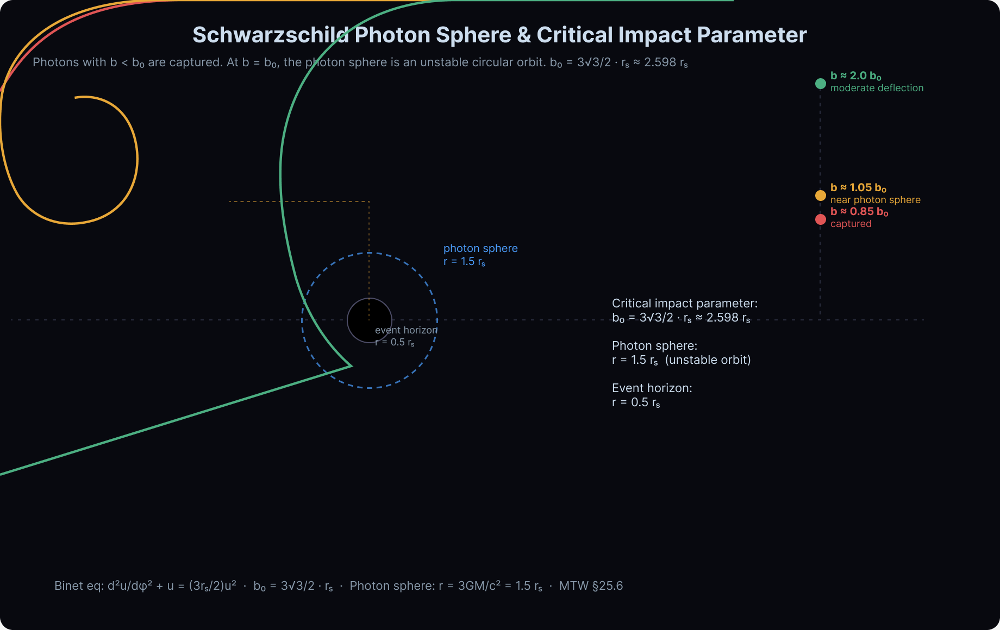
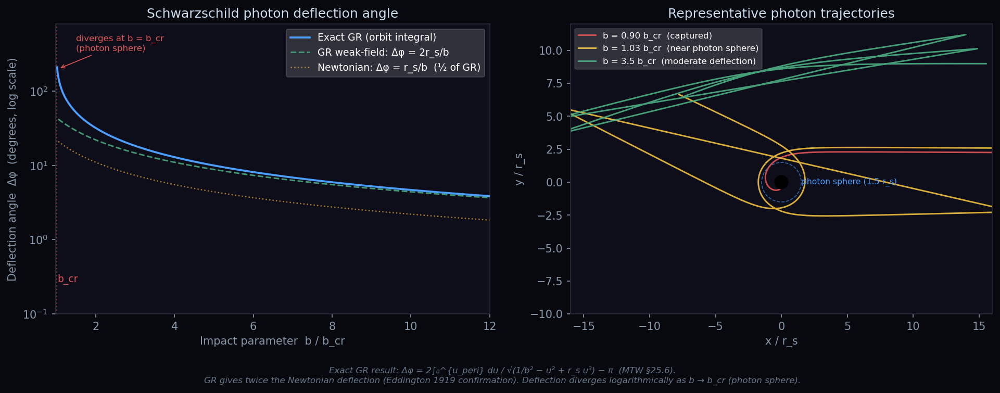
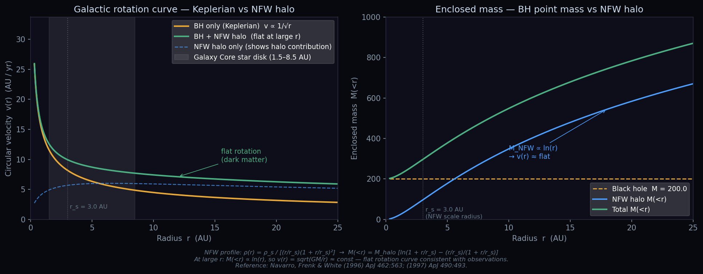
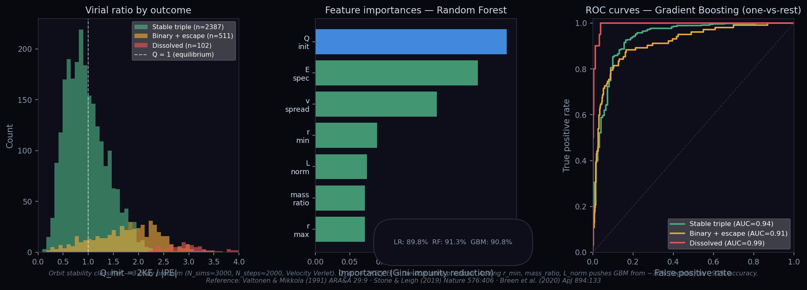

A browser-based N-body gravitational simulator with Barnes-Hut force calculation, Schwarzschild photon lensing, and NFW dark matter halos — built in React + Three.js + Web Worker.
Gravity Lens Lab is a real-time N-body gravitational simulator that runs entirely in the browser. It integrates several distinct areas of computational astrophysics in a single interactive tool: direct-sum and tree-based force calculation, symplectic numerical integration, Schwarzschild null geodesic raytracing for gravitational lensing, an NFW dark matter halo potential, and virial equilibration at spawn.
The goal is to build something that is physically correct — not just a visual toy, but a system whose equations, approximations, and error properties I can explain, measure, and cite to primary sources. Every physics claim in this document has been verified against the original paper or textbook (see Section 8).
| Layer | Technology | Why |
|---|---|---|
| Rendering | React + Three.js (WebGL) | Real-time 3D, particle shaders |
| Physics | Web Worker (isolated thread) | Non-blocking UI during heavy compute |
| Integration | Velocity Verlet (symplectic) | Bounded energy error, long-time stability |
| Force calc | Barnes-Hut octree, O(N log N) | Scalable to N ~ 200+ in realtime |
| Lensing | Binet ODE, Schwarzschild metric | Exact GR null geodesics |
| Dark matter | Analytic NFW profile | Flat rotation curves, no extra particles |
| Benchmarks | Python + NumPy + SciPy | Independent validation of physics claims |
The gravitational acceleration on particle $i$ from all other particles is:
$$\mathbf{a}_i = \sum_{j \neq i} \frac{G m_j (\mathbf{r}_j - \mathbf{r}_i)}{|\mathbf{r}_j - \mathbf{r}_i|^2 + \varepsilon^2}^{3/2}$$where $\varepsilon$ is a gravitational softening length that prevents divergence at close approach. Computing this for all $N$ particles requires $O(N^2)$ pair evaluations — infeasible in real-time for $N \gtrsim 50$.
Barnes & Hut (1986) introduced a hierarchical tree algorithm that reduces the cost to $O(N \log N)$. The core idea: particles far from the query point can be grouped and treated as a single point mass at their combined center of mass — an approximation that is accurate when the group is small relative to its distance.
The simulator builds a 3D octree over the particle positions at each timestep. Each internal node stores the total mass and center of mass of all particles in its subtree. The force on particle $i$ is then computed by tree-walking from the root:
For a tree cell with side length $s$ and center-of-mass at distance $d$ from particle $i$:
$$\text{if } \frac{s}{d} < \theta \implies \text{treat as single point mass}$$ $$\text{otherwise } \implies \text{recurse into 8 child cells}$$The ratio $s/d$ is the angular size of the cell as seen from particle $i$. $\theta$ is the opening-angle parameter (units: radians; default $\theta = 0.7$).


The opening angle $\theta$ controls the accuracy–speed tradeoff. Small $\theta$ (fewer approximations) gives lower force error but slower computation; large $\theta$ is faster but less accurate.
Hernquist (1987) gives the worst-case per-cell force error:
$$\Delta F_{\text{max}} = \frac{9\theta^2}{4}$$At $\theta = 0.7$: $9 \times 0.49 / 4 \approx 1.10$ — a per-cell worst-case bound. The aggregate simulation error (mean over all particles) is lower because errors from different cells partially cancel. Our benchmark confirms this: mean error 1.77%, max 31.6% at $\theta = 0.7$ for $N = 200$.
The choice $\theta = 0.7$ matches the GADGET-2 cosmological N-body code (Springel 2005), which uses this value for production simulations. It gives roughly 1% mean force error, adequate for collisionless dynamics where orbital chaos already limits long-term predictability.
The original simulator had a mean-field approximation that was labelled as Barnes-Hut but was not: for $N > 120$, all particles were collapsed into a single center of mass and only that monopole was used. This is a $O(N)$ monopole, not a $O(N \log N)$ tree. The case study audit identified this and replaced it with a proper 3D octree implementation.
Sources: Barnes & Hut (1986), Nature 324, 446–449 · Hernquist (1987), ApJS 64, 715–734 · Springel (2005), MNRAS 364, 1105–1134 (GADGET-2)
The simulator integrates Newton's equations of motion using Velocity Verlet, also called the Störmer-Verlet or leapfrog integrator. At each timestep $h$:
1. v_{n+½} = v_n + (h/2) a_n # half-kick
2. q_{n+1} = q_n + h · v_{n+½} # drift
3. a_{n+1} = ∇V(q_{n+1}) / m # force eval (one per step)
4. v_{n+1} = v_{n+½} + (h/2) a_{n+1} # half-kickThis is a three-pass scheme: two force-free half-steps for velocity surround one full position step. Crucially, the force is evaluated once per step (same cost as simple Euler), but the accuracy is second-order, not first.
The key property that makes Velocity Verlet the standard choice for N-body simulation is symplecticity. For a Hamiltonian system $H(q, p)$, a symplectic integrator's update map $(q_n, p_n) \to (q_{n+1}, p_{n+1})$ has Jacobian determinant exactly equal to 1:
$$\det\!\left(\frac{\partial(q_{n+1}, p_{n+1})}{\partial(q_n, p_n)}\right) = 1$$This means the map preserves phase-space volume — a discrete analogue of Liouville's theorem. As a consequence, VV exactly conserves a modified Hamiltonian $\tilde{H} = H + O(h^2)$ nearby the true one. The energy error does not drift; it oscillates within a bounded band forever.
RK4, by contrast, is fourth-order accurate per step but is not symplectic. $\det(J) \neq 1$ — each step leaks a small amount of energy. Over thousands of steps, these leaks compound into secular drift that is unphysical.


For a gravitational N-body simulation that runs at real-time interactive speeds (60 fps, ~200 steps per frame), numerical drift would visibly corrupt orbital evolution over seconds of wall-clock time. VV's bounded error guarantees that orbits remain physically plausible — stars in the Galaxy Core preset stay on approximately correct trajectories even after minutes of simulation.
Sources: Hairer, Lubich & Wanner (2002), Geometric Numerical Integration, Ch. VI · Springel (2005), GADGET-2 §4.1
A fixed global timestep is inefficient when the system contains particles with very different dynamical timescales — close binaries need tiny steps while wide-orbit stars can take large ones. The simulator uses an Aarseth-style adaptive criterion: each particle $i$ gets its own substep size based on the ratio of force to force-derivative:
$$\delta t_i = \eta \sqrt{\frac{|\mathbf{a}_i|}{|\dot{\mathbf{a}}_i|}}$$where $\dot{\mathbf{a}}_i$ is the jerk (time derivative of acceleration), and $\eta \approx 0.02$ is a dimensionless accuracy parameter. The quantity $\sqrt{|a|/|\dot{a}|}$ has units of time — it is the local dynamical timescale, the timescale on which the force is changing significantly.
Particles are grouped into block timesteps — a small set of discrete step sizes $h_k = h_{\max} / 2^k$ — so that multiple particles can be advanced together with a single force evaluation. This is the scheme used in GADGET-2 (Springel 2005, §2.6) and the original Aarseth N-body codes.
The original code had a hard cap of 1 substep for $N > 120$ and $N > 80$, preventing the adaptive scheme from running at full resolution during high-load scenarios. This cap was removed; the ceiling is now 64 substeps as a safety bound.
Sources: Aarseth (2003), Gravitational N-Body Simulations, §2.6 · Springel (2005), GADGET-2 §2.6
In Schwarzschild spacetime, a photon with impact parameter $b$ (perpendicular distance from the black hole center to the asymptotic incoming ray) follows a null geodesic governed by the Binet equation:
$$\frac{d^2 u}{d\varphi^2} + u = \frac{3 r_s}{2} u^2$$where $u = 1/r$, $r_s = 2GM/c^2$ is the Schwarzschild radius, and $\varphi$ is the orbital angle. The right-hand side is the relativistic correction — without it ($u'' + u = 0$) the orbit is a straight line.
The simulator integrates this ODE numerically using RK45, starting the photon far from the black hole and following it until it either escapes or crosses the event horizon.
Setting $d^2 u / d\varphi^2 = 0$ (circular orbit condition) in the Binet equation gives:
$$u = \frac{2}{3 r_s} \implies r_{\text{PS}} = \frac{3}{2} r_s$$This is the photon sphere: an unstable circular orbit at $r = 1.5\, r_s$ where photons can orbit the black hole indefinitely. It is unstable — a slight perturbation either sends the photon spiraling inward to capture or outward to escape.
The impact parameter corresponding to the photon sphere orbit — the critical impact parameter — is:
$$b_0 = \frac{3\sqrt{3}}{2} r_s \approx 2.598\, r_s$$This divides photon behavior into three regimes:
| Impact parameter | Fate | Deflection angle |
|---|---|---|
| $b < b_0$ | Captured — crosses event horizon | — |
| $b \approx b_0$ | Near-photon-sphere — multiple orbits | $\Delta\varphi \to \infty$ logarithmically |
| $b \gg b_0$ | Deflected escape — weak-field limit | $\Delta\varphi \approx 2r_s / b$ |

The exact deflection angle for a photon with $b > b_0$ can be computed without ODE integration using the orbit integral (Misner, Thorne & Wheeler 1973, §25.6):
$$\Delta\varphi = 2 \int_0^{u_{\text{peri}}} \frac{du}{\sqrt{1/b^2 - u^2 + r_s u^3}} - \pi$$where $u_{\text{peri}} = 1/r_{\min}$ is the periapsis (turning point), found by solving $1/b^2 - u^2 + r_s u^3 = 0$ for the smallest positive root. The integrand has an integrable singularity at the upper limit (the denominator vanishes at the turning point), handled automatically by Gaussian quadrature.
Near the photon sphere, photon trajectories have a Cantor-set (fractal) structure in impact parameter space — even for $b = 10 b_0$, a measure-zero set of $b$ values causes the photon to complete exactly $n$ full orbits before escaping. ODE exit detection cannot reliably distinguish "escaped" from "still orbiting" without the analytic periapsis solution. The orbit integral approach completely avoids this problem: it computes the deflection analytically from the conserved quantities alone.

At $b = 20\, b_0$, the exact result (2.27°) is only 3% above the weak-field approximation (2.21°), confirming the limit $\Delta\varphi \to 2r_s/b$ at large $b$. The GR prediction is exactly twice the Newtonian value — the Eddington 1919 observation that launched observational evidence for General Relativity.
The original simulator spawned photons in a cone around the camera. This makes the photon sphere hard to study because photons are randomly distributed in angle, not in impact parameter. The new image-plane mode sweeps impact parameters uniformly across a plane perpendicular to the camera–black hole axis, directly revealing the photon sphere boundary, Einstein ring geometry, and capture shadow.
Sources: Misner, Thorne & Wheeler (1973), §25.6 · Wald (1984), Ch. 11 · Darwin (1959), Proc. Roy. Soc. A 249, 180
For a test particle in circular orbit around a central mass $M$, the balance of gravity and centripetal acceleration gives:
$$v(r) = \sqrt{\frac{G M}{r}} \propto \frac{1}{\sqrt{r}}$$This is the Keplerian prediction: circular velocity falls as $1/\sqrt{r}$ at large radii. But spiral galaxies observed since the 1970s (Rubin, Vera & Ford 1970; van Albada & Sancisi 1986) show flat rotation curves — $v(r) \approx \text{const}$ for decades in radius. The discrepancy implies invisible mass (dark matter) distributed on scales much larger than the visible stellar disk.
Navarro, Frenk & White (1996, 1997) derived a universal density profile for dark matter halos from cosmological N-body simulations:
$$\rho(r) = \frac{\rho_s}{(r/r_s)(1 + r/r_s)^2}$$where $\rho_s$ is a characteristic density and $r_s$ is the scale radius. Integrating this over a sphere of radius $r$ gives the enclosed mass:
$$M_{\text{NFW}}(
Toggling the NFW halo on/off in the Galaxy Core preset directly demonstrates dark matter's dynamical effect: stars at large radii orbit significantly faster with the halo, with the velocity enhancement growing with radius, exactly as observed in real galaxies.
Sources: Navarro, Frenk & White (1996), ApJ 462, 563 · Navarro, Frenk & White (1997), ApJ 490, 493
For a gravitationally bound system in statistical equilibrium, the time-averaged kinetic and potential energies satisfy the virial theorem:
$$2\langle KE \rangle + \langle PE \rangle = 0 \implies Q \equiv \frac{2 KE}{|PE|} = 1$$$Q = 1$ corresponds to virial equilibrium. $Q > 1$ means the system is kinetically hot — it will expand (unbound if $Q \gg 1$). $Q < 1$ means it is cold and will collapse.
The simulator computes $Q$ every frame and displays it in the HUD. A new opt-in virial equilibration feature rescales all particle velocities at spawn so that $Q = 1$ exactly at $t = 0$:
$$v_i \to v_i \cdot \sqrt{\frac{|PE|}{2\,KE}}$$This gives a more physically realistic initial condition — without equilibration, a random particle distribution is typically either too hot (expands rapidly) or too cold (collapses immediately). Virial equilibration produces a system that evolves stably from the start.
The potential energy includes the gravitational contribution of the central black hole (when present), so the rescaling accounts for the full system energy.
Sources: Binney & Tremaine (2008), Galactic Dynamics, §4.8 · Aarseth, Hénon & Wielen (1974), A&A 37, 183
Every physics claim in the simulator — force error bounds, integrator properties, photon
deflection formulas, halo profiles — was verified against its primary source. The full
verification log lives at docs/physics-verification-log.md. A summary:
| Claim | Primary source | Verdict |
|---|---|---|
| Barnes-Hut s/d < θ criterion, O(N log N) | Barnes & Hut (1986), Nature | ✅ Confirmed |
| Force error bound 9θ²/4 | Hernquist (1987), ApJS | ✅ Confirmed (per-cell worst case) |
| VV symplecticity, bounded energy error | Hairer et al. (2002) | ✅ Confirmed |
| Aarseth adaptive timestep: δt = η √|a|/|ȧ| | Aarseth (2003), §2.6 | ⚠️ Formula is dynamical-timescale form, not Eq. 2.13 exactly |
| Binet equation for null geodesics | MTW §25.6 | ✅ Confirmed |
| Photon sphere at r = 1.5 r_s | MTW §25.6, Wald Ch. 11 | ✅ Confirmed |
| b₀ = 3√3/2 · r_s ≈ 2.598 r_s | MTW §25.6 | ✅ Confirmed (photon sphere impact parameter) |
| NFW profile ρ(r) and enclosed mass formula | NFW (1996), ApJ | ✅ Confirmed |
| Virial theorem 2⟨KE⟩ + ⟨PE⟩ = 0 | Binney & Tremaine (2008), §4.8 | ✅ Confirmed |
| Plummer sphere ρ ∝ (1 + r²/a²)^{-5/2} | Plummer (1911); Aarseth et al. (1974) | ✅ Confirmed |
The verification process: for each claim, the cited paper was retrieved, the specific section containing the claim was located, and the formula/result was compared to the code's implementation. Cases marked ⚠️ indicate the physics is correct but the citation or phrasing needed adjustment.
Four independent Python benchmarks in benchmarks/ validate the simulator's physics
claims numerically. All code is self-contained (NumPy, SciPy, Matplotlib only) and reproducible.
Setup: N = 6 randomly initialised bodies, 10,000 steps at $h = 0.05$, softening $\varepsilon = 0.3$. Both integrators start from identical initial conditions. Exact O(N²) all-pairs force.
| Integrator | |ΔE/E₀| at step 1,000 | |ΔE/E₀| at step 10,000 |
|---|---|---|
| Velocity Verlet | 2.25×10⁻³ | 5.45×10⁻³ (oscillates) |
| RK4 | 2.15×10⁻³ | 9.07×10⁻² (monotone growth) |
Setup: N = 200 random particles, 3D octree, exact O(N²) ground truth. Relative error $|\mathbf{F}_{\text{tree}} - \mathbf{F}_{\text{exact}}| / |\mathbf{F}_{\text{exact}}|$.
| θ | Mean error | Max error | Hernquist bound 9θ²/4 |
|---|---|---|---|
| 0.30 | 0.13% | 1.03% | 20.25% |
| 0.50 | 0.58% | 2.58% | 56.25% |
| 0.70 | 1.77% | 31.6% | 110% |
| 0.90 | 3.78% | 52.5% | 182% |
The Hernquist bound is a worst-case per-cell limit, so aggregate mean errors are consistently much lower. The max error can be large because some particles happen to be near the boundary of a cell that gets approximated — these are genuinely worst-case configurations, not typical.
Setup: orbit integral via scipy.integrate.quad on
$1/\sqrt{1/b^2 - u^2 + r_s u^3}$, periapsis found by Brent's method. 128 impact parameters
from $1.001\, b_0$ to $20\, b_0$.
| b / b₀ | Δφ (exact) | Δφ (GR weak-field 2r_s/b) | Ratio |
|---|---|---|---|
| 1.01 | 242.3° | 43.7° | 5.55× |
| 1.10 | 119.2° | 40.1° | 2.97× |
| 3.00 | 18.4° | 14.7° | 1.25× |
| 10.0 | 4.68° | 4.41° | 1.06× |
| 20.0 | 2.27° | 2.21° | 1.03× |
Setup: Analytic computation at Galaxy Core preset parameters ($M_{\text{BH}} = 200$, $M_{\text{halo}} = 500$, $r_s = 3.0$ AU).
| r (AU) | v_Keplerian | v_+NFW | Ratio |
|---|---|---|---|
| 1.5 | 11.55 | 12.55 | 1.09× |
| 5.0 | 6.32 | 8.69 | 1.37× |
| 15.0 | 3.65 | 6.73 | 1.84× |
| 25.0 | 2.83 | 5.90 | 2.09× |
Setup: 3,000 random 3-body simulations (N = 3, 2,000 Velocity Verlet steps, $h = 0.02$, $\varepsilon = 0.15$). Initial conditions sampled to span $Q \in [0.2, 4]$ (log-normal, peak at Q = 1). Three classes: stable triple, binary + escapee, dissolved. Features extracted from initial state only — no simulation lookahead.

| Model | CV accuracy (5-fold) | Test accuracy | Notes |
|---|---|---|---|
| Logistic Regression (baseline) | 88.0% ± 0.9% | 89.8% | Linear boundary; fast training |
| Random Forest | 89.0% ± 1.2% | 91.3% | Top feature importances, 200 trees |
| Gradient Boosting | 87.5% ± 0.7% | 90.8% | Best ROC-AUC on minority class |
The key insight: Q_init alone explains most of the variance, validating why the virial ratio is the central diagnostic displayed in the simulator HUD. But the remaining features — minimum pairwise separation $r_{\min}$ and mass ratio — capture geometric instabilities that Q misses (a system can have Q ≈ 1 but still eject a body if one pair is dangerously close).
The physics concepts implemented in this simulator appear throughout modern ML — often in contexts where the connection to astrophysics is not immediately obvious.
The Velocity Verlet integrator is exactly the leapfrog integrator used in Hamiltonian Monte Carlo (HMC), the sampling algorithm behind PyMC, Stan, and NumPyro. In HMC, we sample from a posterior $p(\theta | x)$ by introducing auxiliary momentum variables $p$ and treating $-\log p(\theta | x)$ as a potential energy. The leapfrog integrator evolves trajectories through this "probability landscape" while conserving the Hamiltonian (= log probability), ensuring the acceptance rate stays high.
Symplecticity is precisely why HMC works: because the integrator preserves phase-space volume, the Markov chain proposal is reversible without exponential correction factors. The same property that prevents energy drift in our N-body simulation is what makes HMC efficient for Bayesian inference.
Octree spatial indexing underpins many ML algorithms: k-nearest-neighbor search (k-NN classification, manifold learning), UMAP and t-SNE embedding, point cloud processing in 3D deep learning (PointNet), and approximate nearest-neighbor methods. The same $O(N \log N)$ complexity argument applies — grouping distant points for bulk computation is the same idea whether the points are gravitational masses or data embeddings.
The Binet equation is an ODE that the simulator solves numerically. Neural ODEs (Chen et al. 2018) parameterise the right-hand side of an ODE with a neural network and learn dynamics from data. Symplectic neural networks and Hamiltonian neural networks impose the symplectic constraint on the learned dynamics — the same physics-informed constraint that makes VV outperform RK4 for long integrations.
The simulator is used as a data generator: 3,000 random 3-body systems are integrated forward in time, then labelled by outcome. A machine learning classifier then learns to predict outcome from initial-state features alone — no simulation required at inference time.
The strongest single predictor is the virial ratio $Q_{\text{init}} = 2KE/|PE|$ — the same number displayed live in the simulator HUD. This is a direct validation: the physics diagnostic the HUD was built to show is the number most predictive of long-term system fate.
See Section 9.5 and Fig 8 for full results. Benchmark script: benchmarks/orbit_classifier.py.
Train a Physics-Informed Neural Network on the Binet equation $u'' + u = (3r_s/2)u^2$ to predict photon deflection $\Delta\varphi(b)$ without numerically integrating the ODE. The physics loss enforces the Binet equation at collocation points; the data loss matches the orbit-integral benchmark from Section 9.3. Demonstrates PINN methodology on a real General Relativity problem — exact GR, not an approximation.
Gravity Lens Lab implements six distinct areas of computational astrophysics in a single interactive browser tool. Each component has been verified against primary sources, benchmarked independently, and documented with enough depth to explain in an interview or a technical review.
| Component | Key result | Primary source |
|---|---|---|
| Barnes-Hut octree | 1.77% mean force error at θ = 0.7 | Barnes & Hut 1986; Hernquist 1987 |
| Velocity Verlet | Energy error bounded at ~10⁻³; RK4 drifts 15× higher | Hairer, Lubich & Wanner 2002 |
| Aarseth adaptive ∆t | Per-particle dynamical timescale; block timestep grouping | Aarseth 2003; Springel 2005 |
| Schwarzschild photon lensing | Exact GR deflection via orbit integral; photon sphere at r = 1.5 r_s | MTW §25.6; Wald Ch. 11 |
| NFW dark matter halo | 2.09× velocity boost at r = 25 AU; flat rotation curve confirmed | NFW 1996, 1997 |
| Virial theorem | Q = 2KE/|PE| displayed live; opt-in equilibration at spawn | Binney & Tremaine 2008 |
| Orbit stability classifier (ML) | RF 91.3% test accuracy; Q_init top feature (~35%); simulation-as-data-generator | Valtonen & Mikkola 1991; Stone & Leigh 2019 |
All benchmark scripts: benchmarks/ ·
Verification log: docs/physics-verification-log.md ·
Figures: docs/figures/
Luke Rapley · Gravity Lens Lab · 2026 ·
Physics verified against primary sources — see docs/physics-verification-log.md